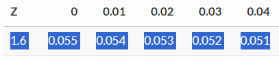

9 Hypothesis Testing
9.0.1 Falsificationism
In science, it is rarely possible to prove a general theory true. Instead, theories earn credibility by surviving serious attempts to refute them. This is the core of falsificationism, most closely associated with Karl Popper (Popper, 1959/2002). A scientific claim must be testable and falsifiable: it should make predictions that could, in principle, be shown false by observation. The proverbially simple example is “All swans are white.” No number of white swans can verify the claim, but a single black swan would falsify it.
This logic connects directly to statistical practice. In hypothesis testing we do not “prove the theory”; rather, we pose a precise claim—the null hypothesis \(H_0\)—and ask whether the observed data are sufficiently incompatible with \(H_0\) to warrant rejecting it. A small \(p\)-value is evidence against \(H_0\), not proof for any particular alternative. Likewise, failing to reject \(H_0\) does not verify \(H_0\); it merely indicates that the data are not unusually discordant with it given the test’s design and assumptions. Good scientific practice increases the riskiness of tests—deriving clear, prior predictions; minimizing researcher degrees of freedom; and using designs that would make discordant data likely if the theory were false (e.g., preregistration and prospective power analysis). In short, falsificationism reminds us that scientific conclusions are provisional and should be sharpened by attempts to refute, not by post hoc confirmation.
9.0.2 Hypothesis testing {#sec-Hypothesis testing}
Hypothesis testing is a method of inferential statistics which allows researchers to draw conclusions about the population based on sample data. It involves formulating hypotheses, calculating test statistics, determining p-values, and drawing conclusions about the null hypothesis.
Hypothesis testing builds upon previously covered topics like sampling theory and estimation, where sample statistics are used as the best estimate of population parameters; standard errors to express the uncertainty surrounding those estimates; and probability calculus, using probability distributions - like the standard normal distribution - to compute the probability of observing certain values based on the sampling distribution.
To introduce the concept of hypothesis testing, let’s consider an intuitive example. Imagine your car won’t start, and you hypothesize that the battery is dead. You then perform an experiment by replacing the battery. If the car starts, you conclude that your initial hypothesis was correct - the battery was indeed dead.
In this thought experiment, you only need one piece of evidence. Statistical hypothesis instead rely on evidence from many observations, and use probability calculus to test hypotheses in the presence of uncertainty. Statistical tests use probability calculations to compute how probable it is to observe the sample data if the null hypothesis were true. If the resulting probability is very low, we may doubt whether the null hypothesis is indeed true.
The steps involved in hypothesis testing are as follows:
- Formulate hypotheses: This involves stating a testable proposition about population parameters.
- Calculate a test statistic: The test statistic describes how many standard errors away from the population statistic, under the null hypothesis, the sample statistic is.
- Calculate the p-value: The p-value represents the probability of observing a value at least as extreme as the sample statistic, assuming the null hypothesis is true.
- Draw a conclusion about the null hypothesis: Based on the p-value, we either reject or fail to reject the null hypothesis.
Hypotheses can be formulated as equality or inequality statements. Equality hypotheses state that a value, difference, or effect is equal to zero, while inequality hypotheses state that a value, difference, or effect is larger or smaller than a specific value. It’s important to keep in mind that hypothesis testing does not provide evidence for hypotheses but rather helps in casting doubt on a null hypothesis.
In addition to the null hypothesis, we can also specify an alternative hypothesis. The specification of the alternative hypothesis depends on a bit of philosophy of science. Fisher’s philosophy suggests using only a null hypothesis; if this null hypothesis is rejected, the “truth” must be anything other than the null hypothesis. We could thus say that, according to Fisher’s philosophy, the alternative hypothesis is the negation of the null hypothesis. If \(H_0: \mu = 0\), then \(H_a: \mu \neq 0\); or, if \(H_0: \mu > 0\), then \(H_a: \mu \leq 0\). The alternative hypothesis is in both cases the “opposite” of the null hypothesis.
Neyman-Pearson’s philosophy instead involves stating specific null and alternative hypotheses, with an explicit expected effect size for the alternative hypothesis. Assuming a specific expected effect size allows us to calculate the probabilities of drawing correct or incorrect conclusions.
In hypothesis testing, we calculate a test statistic, which measures the distance between the hypothesized population value and the sample statistic in terms of standard errors. The probability of observing a test statistic at least as extreme as the one we did observe is computed using an appropriate probability distribution. For many tests, we use either the Z-distribution or t-distribution, depending on whether we know the population standard deviation or not. This gives us a probability value (p-value), representing the probability of observing data as extreme as or more extreme than the sample data, assuming that the null hypothesis is true.
When interpreting p-values, it’s crucial to understand that they give the probability of observing certain data assuming the null hypothesis is true, rather than providing the probability of the null hypothesis being true or false. The p-value is then compared to a pre-determined significance level (usually denoted as alpha) to make a decision about accepting or rejecting the null hypothesis.
Rejecting the null hypothesis indicates that the observed data is unlikely to occur if the null hypothesis were true. On the other hand, failing to reject the null hypothesis means that the observed data is not surprising or does not provide sufficient evidence to reject it.
When testing hypotheses, we can make two types of errors: A Type I error refers to rejecting the null hypothesis when it is true (a false-positive conclusion), while Type II error refers to accepting the null hypothesis when it is false (failing to detect a true effect).
9.0.3 Causality
Causal knowledge explains what would change if we intervened: “If we change \(X\), \(Y\) will tend to change in a predictable direction.” This is why causality matters for science and policy—causal claims connect description to action (Shadish, Cook, & Campbell, 2002). Two levels are useful to distinguish. Type (general) causality concerns population regularities (e.g., “Smoking causes lung cancer.”). Actual (token) causality concerns whether a specific event in a concrete situation caused a particular outcome (e.g., “This crash occurred because the brakes failed.”). For the latter, the modified Halpern–Pearl account captures the core intuition: \(X\) counts as a cause of \(Y\) when (i) both occurred; (ii) had \(X\) been different, and relevant background factors held as they actually were, \(Y\) would have been different; and (iii) nothing extraneous is needed for the claim (Halpern, 2015).
How do we justify causal claims in practice? A helpful everyday test traces to Mill’s requirements: covariation, temporal precedence, and non-spuriousness (Oppewal, 2010). Randomized experiments are powerful because they enforce these conditions by design: random assignment severs links from unmeasured causes to treatment, outcomes are measured after assignment, and treatment–control contrasts establish covariation (Shadish et al., 2002). Outside experiments, causal inference relies on design and assumptions—e.g., careful measurement of confounders, quasi-experimental strategies, and transparent modeling. Hypothesis tests then assess whether the observed data are compatible with specific causal predictions, but testing alone does not create causality: the strength of a causal claim ultimately rests on research design, the plausibility of assumptions, and the theory’s survival of severe attempts at refutation.
9.1 Lecture
9.2 Statistical Power
9.2.1 Hypothesis Testing: Type I and Type II Errors
When we conduct a null-hypothesis significance test, we select the significance level \(\alpha\). Alpha is the probability of committing a Type I error (drawing a false-positive conclusion). Since we select the alpha level, it is known. If we use \(\alpha = .05\), that means that - by definition - we accept a 5% risk of committing a Type I error.
There is also the probability of committing a Type II error. This is called \(\beta\). We don’t know the value of \(\beta\) beforehand, but we can calculate it if we make some assumptions. The probability of committing a Type II error (drawing a false-negative conclusion) depends on a few factors:
9.2.1.1 How big the effect is
Big effects are harder to miss; imagine trying to detect a difference between two groups. If the mean of both groups is really close together, it will be harder to detect a difference (see below):
9.2.1.2 How big the sample is
Large samples make it easier to detect smaller effects; imagine that the two distributions below are sampling distributions for two groups with very small sample sizes (left) and very large sample sizes (right):
9.2.1.3 How ‘noisy’ the data are
The standard deviation is a measure of how “noisy” the data are. If observations are very spread out (high standard deviation), it will be harder to detect small differences. Consider that a small difference between two groups would be hard to detect if the two groups overlapped very much (= high standard deviation). Look at the same picture from the previous point (sample size); it illustrates this principle. The reason that both sample size and “noise in the data” have an impact on the probability of committing a Type II error is because they are used to calculate the standard error:
\[ SE_M = \frac{SD}{\sqrt{n}} \]
9.2.2 Power of a Test
The “power” of a test is the probability that it will correctly detect a true effect of a specific size. Since \(\beta\) is the probability of missing a true effect, it follows that \(1-\beta\) must be the probability of detecting a true effect, or the power.
As explained in the previous paragraph, we must know a few pieces of information to be able to calculate \(\beta\):
- Effect size
- Sample size
- Standard deviation
When we conduct a study, we often know the sample size and standard deviation. The effect size is unknown, but we can assume a specific effect size. Think of this as an “informative” alternative hypothesis. The standard alternative hypothesis in null-hypothesis significance testing is just “anything that’s not the null hypothesis”. So if \(H_0: \mu = 0\), then \(H_a: \mu \neq 0\). Now, we must specify an exact value. For example, we could choose the smallest effect size of interest as the alternative hypothesis: Let’s say we’d be interested in a mean value of \(\mu = 0.2\). Then we could set our informative alternative hypothesis as \(H_i: \mu = 0.2\).
Now we have all the information needed to calculate the power of the test. To do so, we draw two sampling distributions (see illustration below): One (in red) centered around the null hypothesis, \(H_0: \mu = 0\), and one centered around the informative alternative hypothesis, \(H_i: \mu = 0.2\). We find the critical value in the red distribution around the null hypothesis; remember that \(\alpha\) is the 5% of probability in the right tail of the red distribution. But we can now also calculate \(\beta\), the unknown probability in the tail of the blue distribution to the left of the critical value. If the informative alternative hypothesis is true, then this is the probability of failing to detect that true effect. Although this example has no numeric values, we see that the blue shaded area representing \(\beta\) is slightly smaller than the red shaded area representing \(\alpha\), so the probability of committing a Type II error must be less than .05, and therefore the power \(1-\beta\) must be greater than 95%! If our assumptions are correct, we’d be really well able to detect a true effect of the size specified under \(H_i\).
9.2.3 Try it Yourself
Now, let’s calculate this by hand. Imagine that last year’s average grade was \(M = 5\), with a standard deviation of \(SD = 1.5\). This year, we have 73 students. We’ve made some changes to the teaching material, and we hope to reach an average grade of \(M = 6\).
Assume that the standard deviation this year will be the same as last year, and calculate the power of being able to detect a mean grade of \(H_i: \mu = 6\) when the null hypothesis is that the mean grade is the same as last year, \(H_0: \mu = 5\).
Step 1: Calculate the SE
We calculate the SE as \(SE = \frac{SD}{\sqrt{n}} = \frac{1.5}{\sqrt{73}} = 0.18\)
Step 2: Calculate Critical Value
The critical value is the boundary that corresponds to \(\alpha = .05\) in the distribution centered around \(H_0\). Looking at the t- or Z-table (because sample size is >>30), we see that this corresponds to a Z-value of about 1.64.

Converting this back to a score on the grades scale, we get:
\[ \text{Grade}_{\text{critical}} = (Z_{\text{critical}} * SE) + \mu_{H_0} = (1.64 * 0.18) + 5 = 5.3 \]
Step 3: Get Left-Tail Probability for That Value
Now, we just need to get the left-tail probability for that critical value, in the blue distribution. Convert that critical value back to a Z-value, but now in the blue distribution which is centered around \(\mu_{H_i} = 6\):
\[ Z = \frac{\text{Grade}_{\text{critical}}-\mu_{H_i}}{SE} = \frac{5.3 - 6}{0.18} = -3.89 \]
This is an extremely large (negative) Z-value; it’s not even in our table. Thus, the left-tail probability \(\beta\) will be tiny - \(\beta < .01\).
That means that our power to detect a true effect of 6 would be very high - \(1-\beta = 1-.01 = .99\), 99%!
9.3 Formative Test
A formative test helps you assess your progress in the course, and helps you address any blind spots in your understanding of the material. If you get a question wrong, you will receive a hint on how to improve your understanding of the material.
Complete the formative test ideally after you’ve seen the lecture, but before the lecture meeting in which we can discuss any topics that need more attention
Question 1
For a two-tailed Z-test of the sample mean, the p-value is the probability of finding a more extreme sample mean than the observed sample mean, if the alternative hypothesis were true.Question 2
A researcher performs a Z-test to test the hypotheses H0: mu = 0 versus H1: mu > 0. She finds a test statistic of Z = 2.03 and a one-tailed p-value of 0.02. Statement: If the researcher had performed a two-tailed Z-test, the value of the two-tailed p-value would have been halved: 0.01.Question 3
Chris expects that people who have bungee jumped will score high on average on the Big 5 personality trait ‘Openness to Experience’. Openness to Experience has been measured on a 10 point scale (1= not at all open, 10 = extremely open). He takes a random sample of 45 persons who have bungee jumped and observes a mean of 6 and SD of 1.954. He tests the following hypotheses: H0: mu =< 5.5 versus H1: mu > 5.5 with a one-sample t-test. He assumes that Openness to Experience is normally distributed in the population. What is the smallest significance level for which Chris can reject the null hypothesis?Question 4
What is the purpose of inferential statistics?Question 5
What is the standard error?Question 6
What is a hypothesis in the context of statistical testing?Question 7
What is meant by ‘power’ in statistical testing?Question 8
You want to test if the mean height of a sample of 50 students is significantly different from the population mean of 65 inches. The sample mean is 68 inches, and the standard deviation is 2 inches. What is the calculated t-value for this hypothesis test?Question 9
You want to test if the average time spent on a particular task is different from 30 minutes. You collect a sample of 25 participants, and the sample mean time spent on the task is 28 minutes with a standard deviation of 3 minutes. Conducting a two-tailed t-test, what is the calculated t-value?Question 1
When calculating a test statistic, we assume the null hypothesis to be true - not the alternative hypothesis.
Question 2
The p-value for a two-tailed test is twice as large as for a one-tailed test (because you have the same one-tailed probability in both tails). For two-tailed tests, if the observed effect is in the direction of the alternative hypothesis, you can half the two-tailed p-value.
Question 3
Divide the standard deviation by the square root of 45 to get the standard error. Then, divide the difference between the observed mean of 6 and the hypothesized mean of 5.5 by that standard error to get the test statistic. Then, find the critical t-values for a one-sided test with the three alpha levels mentioned in the answers in the t-distribution for 44 degrees of freedom (n - 1). Note that the answer is .05!
Question 4
Inferential statistics involves using sample data to make inferences or draw conclusions about the larger population from which the sample was drawn. It allows researchers to make educated guesses about population parameters based on the information collected from the sample. Calculating sample statistics is a step in the inferential process, but it is not the primary purpose of inferential statistics. Testing the null hypothesis is another inferential procedure, but it is a specific type of hypothesis testing, and not the overall purpose of inferential statistics.
Question 5
The standard error is a measure of the uncertainty associated with the sample statistic as estimator of the population parameter. It represents how much the sample statistic is expected to vary from one sample to another if multiple samples were drawn from the same population.
Question 6
In statistical testing, a hypothesis is a testable proposition about the population that can be examined using sample data. It is a statement or assumption that researchers put to the test to determine if there is evidence to support it or not. The hypothesis is formulated based on the theory or observations made about the population.
Question 7
Power in statistical testing refers to the probability of correctly detecting a true effect or relationship between variables. It is the likelihood of finding a significant result in a study when the effect being investigated truly exists in the population. It is important to have sufficient power in a study to avoid false-negative findings, where we fail to reject the null hypothesis when there is a real effect. Power is one minus the probability of committing a Type II error, or 1-beta.
Question 8
To calculate the t-value for this hypothesis test, you can use the formula: t = (sample mean - population mean) / (standard deviation / square root of sample size). Plugging in the values, t = (68 - 65) / (2 / sqrt(50)) = 10.61.
Question 9
The t-value for a two-tailed t-test can be calculated using the formula: t = (sample mean - population mean) / (standard deviation / square root of sample size). In this case, the population mean is 30 minutes. Plugging in the values, t = (28 - 30) / (3 / sqrt(25)) = -3.33.
9.4 Tutorial
9.4.1 Assignment 1: Hypothesis Testing - Formulating Hypotheses
Discuss with your portfolio group the logic behind hypothesis testing, and how it relates to your personal (and group’s) research interests.
Consider the following three research descriptions. Formulate H0 and H1 in words. Discuss your answers with your group members.
Researchers want to know whether it matters for test performance if an exam is completed on a computer or using paper and pencil. Hence, the research question reads: Is there an effect of the type of administration (computer or paper and pencil) on the test performance?
What would be the H0 and HA for this study?
This appears to be an undirected hypothesis about a mean difference for two independent samples, without a clearly specified alternative hypothesis. Thus, we could state:
\(H_0: \mu_{computer} = \mu_{paper}\) \(H_A: \mu_{computer} \neq \mu_{paper}\)
Researchers want to know whether the alcohol consumption among Dutch students differs from the alcohol consumption in the general Dutch population. Using CBS statistics, they know that in the general population the average alcohol consumption is 5.6 glasses a week. The question is whether the average alcohol consumption among students is different from this national average.
What would be the H0 and H1 for this study?
This appears to be an undirected hypothesis about the difference between a mean and a hypothesized value, without a clearly specified alternative hypothesis. Thus, we could state:
\(H_0: \mu = 5.6\) \(H_A: \mu \neq 5.6\)
Researchers want to study whether social isolation is associated with income.
What would be the H0 and H1 for this study?
This appears to be an undirected hypothesis about an association between two variables, without a clearly specified alternative hypothesis. We could thus state:
\(H_0: \rho = 0\) \(H_A: \rho \neq 0\)
Formulating the hypothesis is an important very first step in hypotheses testing. Continue with the next assignment, in which we will go through the steps of a hypothesis test.
9.4.2 Assignment 2: Test Statistics, Alpha and Significance
In this assignment we will go through the steps of a hypothesis test.
While going through the steps we will come across the most important concepts related to hypothesis testing.
For the next steps, we consider the following situation:
Suppose we are interested in the personality profile of musicians; that is, we want to know whether, on average, personality characteristics of musicians differ from those of the general population. For now, we’ll only focus on Openness. We pretend that we have collected data among 25 musicians using a validated scale for which previous research has shown that in the general population the scores are normally distributed with mean 50 and SD 15. It is our task to test whether the mean of Openness for musicians differs from the mean in the general population. To keep things simple, we assume that in the population of musicians the SD is the same as in the general population; that is, we assume that LaTeX: \(\sigma = 15\).
Let openness be the variable of interest. Let \(\mu_{musicians}\) represent the mean openness in the population of musicians. The hypothesis test amounts to testing:
\(H0: \mu_{musicians} = 50\)
\(H1: \mu_{musicians} \neq 50\)
Now, when we do the hypothesis test, we seek for evidence against the null hypothesis. More specifically, our testing procedure starts with the assumption that H0 represents the truth and as long as we don’t have convincing evidence that our assumption is false we stick to that assumption.
The question is, however, when do we have convincing evidence against H0?
Finding evidence against H0 works as follows:
If H0 is true, we expect mean values close to H0. And, if we observe a mean value that is much different from the value under H0, we have convincing evidence against H0. If this happens, we reject H0 as representing the truth and accept the alternative hypothesis, H1.
Hypothesis testing fits Popper’s philosophy of falsification. He introduced this well-known analogy to explain the logic of falsificationism:
- Suppose we assume that all Swans are white, \(H_0: Swans = white\)
- We would then not expect to observe black ones.
- If we do observe black swans, our initial hypothesis is called into question.
- The number of white swans we see (= observations consistent with the hypothesis) does not provide evidence for \(H_0\), because there could always be a black swan out there we haven’t observed yet.
So, the next questions are:
What are the sample values we can expect under H0? When is evidence “convincing” enough? To answer the first question we have to go back to sampling distributions!
For the second question, we need a criterion. We have to realize that even if H0 is true, sample values can be far off just by sampling fluctuations (i.e., by chance). The common criterion is: if the observed value is among the 5% most unlikely samples under H0 (i.e. if H0 is true), we reject the null hypothesis.
Let’s go back to our example about musicians.
Let X be openness. Under H0 we assume that X is normally distributed with mean 50 and SD equal to 15.
What are the mean and standard deviation of the sampling distribution of the mean under H0 given that the sample size is 25? And what do we call the standard deviation of the sampling distribution?
(Use what you have learned in the previous lectures. Hint: first make a drawing of the situation, then do the computations).
Sampling distribution:
- Mean: \(\mu = 50\)
- Standard error ( =SD of sampling distribution!): \(\sigma_{\bar{X}} = \frac{15}{\sqrt{25}}= 3\)
Suppose we want to indicate sample means that are unlikely if H0 would be true. In particular, we want to know how far the sample mean must be from the hypothesized mean to be among the 5% of all possible samples under H0 that are furthest away from the hypothesized means.
What should the value of the sample mean be to fall within the 5% most deviant samples if the sample size is 25?
We are talking about the distribution of the mean; so we need to work with the sampling distribution. We want to know the cut offs that mark the 2.5% highest and 2.5% lowest means. We first have to find the Z-values: they are 1.96 for the highest 2.5%, and (by symmetry) -1.96 marks the 2.5% lowest.
Hence, to be among the 5% of all possible sample means that are most unlikely under H0, the sample mean should be:
larger than 50+1.96 x 3 = 55.88 or smaller than 50-1.96 x 3 = 44.12
Let’s do some more exercises on the Z-test.
Suppose the mean for Openness we found in our sample was 59.
If we use a significance level of 5%, would we reject the null hypothesis?
In the previous step we used cut offs for the sample means to decide about significance. The cut off scores were obtained via the Z-distribution. However, doing all these computations is not necessary (there’s a shortcut!!). In fact, if we know the Z-value for the sample, we can easily find out if the sample is among the 5% of the most unlikely sample means. We only have to compare the value with 1.96 and -1.96 to see whether that is the case.
In this course, we will use Z-values for different purposes. In these specific calculations, Z is used as a Test Statistic. A test statistic quantifies evidence against the null hypothesis. In this case, the Z test statistic expresses how far away from the mean under the null hypothesis the observed mean is, in terms of the number of standard errors.
The Z test-statistic follows the standard normal distribution. The values 1.96 and -1.96 are called the critical values and they mark the 5% most unlikely sample means under H0. In other words, the critical values mark the reject region for H0.
So, if we compute the Z-value for the sample mean, and if that sample value of Z falls in the rejection region, we reject H0 (we found something that is unlikely enough to no longer believe H0 is true). If H0 is rejected we speak of a significant result. See the graph below:
Following these steps to test a mean is one example of performing a “Z-test”!
We can use the Z-test to test hypotheses about the population mean if we know the population \(\sigma\).
The test statistic for the Z-test is:
\(z = \frac{\bar{X}-\mu_{H_0}}{\sigma_{\bar{X}}}\)
This statistic is computed using the mean from the sample, the hypothesized mean under H0 and \(\sigma\).
H0 is rejected at the 5% significance level if z is either larger than 1.96 or smaller than -1.96.
So far, we rejected the null hypothesis if the sample is among the 5% most unlikely sample means under H0. This 5% was called the significance level, and is denoted as \(\alpha = .05\). However, we could just as well choose 1% or .5%.
What would be the critical values for the Z-test if one tests at \(\alpha = .01\)?
What would be the critical values for the Z-test if one tests at \(\alpha = .005\%\)?
For historical reasons, social scientists tend to use \(\alpha = 0.05\) as a default. So in this course, if alpha is not explicitly stated, assume \(\alpha = 0.05\).
When we test hypotheses we reject H0 if the sample we find is unlikely if H0 is true. However, the flip side is that, even though H0 is true, we may find a sample that is much different by chance, and erroneously reject H0. Or, in other words, we could make an error. Rejecting H0 while it is true in reality is called a Type I error!
Consider the following:
- If H0 is true, and you test at \(\alpha = 0.05\), what is the probability of committing a Type I error?
- What is the link between the \(\alpha\)-level and type I error rate?
If H0 is really true (i.e., H0 should not be rejected), then the probability that the sample mean is among the 5% most unlikely is equal to 5%.
The alpha level specifies the risk of a Type I error. So if one tests at an alpha level of .05, it means that one accepts a risk of 5% to commit a Type I error.
Properties of the Z-test:
Used to test hypotheses about the mean in a population, assuming \(\sigma\) known.
The test-statistic equals \(z = \frac{\bar{X}-\mu}{\sigma_{\bar{X}}}\)
The test statistic is normally distributed.
9.4.3 Assignment 3: Z-test
In this assignment we will apply the Z-test.
This assignment first presents an example, followed by two practice questions.
A researcher wants to test \(H_0: \mu = 50\) against \(H_1: \mu \neq 50\)
Data are available from a random sample of 26 respondents. The mean was 53.7. The researcher assumes the SD in the population is 8.5. Perform all steps of the Z-test.
Step 1: Formulate hypotheses
\(H_0: \mu = 50\) \(H_1: \mu \neq 50\)
Step 2: Compute test statistic
Standard error: \(\frac{8.5}{\sqrt{26}}=1.667\)
Test statistic: \(z = \frac{53.7-50}{1.667}=2.212\)
Step 3: Decide about significance
\(\alpha = .05\), so critical values +/- 1.96.
Our test statistic exceeds this critical value.
The sample mean thus falls in the rejection region, and we should conclude that the test is significant so \(H_0\) s rejected.
Step 4: Draw conclusion
We have convincing evidence that the population mean differs from 50.
A researcher wants to test whether the population mean is equal to 80. Data are available from a random sample of 60 respondents. The mean was 74. The researchers assume the SD in the population is 40. Perform and report all steps of the Z-test. What is the resulting p-value?
A researcher wants to test whether the population mean is equal to 500. Data are available from a random sample of 75 respondents. The mean was 546. The researchers assume that the SD in the population is 200. Perform all steps of the Z-test. Use \(\alpha = .01\). Perform and report all steps.
Step 1: Hypotheses: \(H_0: \mu=500\), \(H_1: \mu \neq 500\)
step 2: Compute Statistic:
- standard error: \(\frac{200}{\sqrt{75}} = 23.094\)
- test statistic: \(z = \frac{546-500}{23.094}=1.992\)
Step 3: Decide about significance.
Z does not exceed +/- 2.576. This means that Z does not fall in the reject region when tested at the 1% significance level. The test is not significant.
Step 4: Draw conclusion
\(H_0\) is not rejected.
9.4.4 Quiz
“The null and alternative hypothesis are deduced from the data.”
“When performing a hypothesis test, we start by assuming \(H_0\) is true.”
“If we reject \(H_0\) with \(\alpha=0.05\), then we will also reject it at \(\alpha=0.10\), assuming all other quantities are held constant.”
The critical values of \(\alpha =0.05\) are +/- 1.96. Hence, if \(H_0\) is rejected it means that z in the sample is larger than 1.96 or smaller than -1.96.”
The critical values of \(\alpha =0.1\) are +/- 1.645. This means that for rejecting \(H_0\) at this alpha level, that z should be larger than 1.645 or smaller than -1.645. That is implied by the fact that it exceeds +/- 1.96.
“If we reject \(H_0\), then \(H_0\) is surely wrong.”
We should always be aware of the possibility of making a Type I error. The probability of making a Type I error is equal to \(\alpha\).
“Increasing the sample size n (and holding all the rest constant) decreases the probability of a Type I error.”
Increasing the sample size n (and holding all the rest constant) does not decrease the probability of a Type I error.
The Type I error is determined by the alpha level.
If our sample is among the 5% most unlikely sample means of all possible sample means with the same size under \(H_0\), whatever that sample size N may be.
Increasing the sample size n (and holding all the rest constant) does not decrease the probability of a Type I error.
9.4.5 Assignment 4: Z-test and Alpha-levels
In this assignment we will practice some more with the Z-test, meanwhile we will review important concepts of hypothesis testing. In particular, we will look at significance levels.
To test hypotheses, we need to specify the “significance level”, usually denoted by \(\alpha\). The significance level is our decision criterion to reject H0.
The most common choice is .05. But what does this criterion exactly entail?
Discuss with your group what an \(\alpha\) level entails.
If we test at an \(\alpha\) of .05 it means that we are willing to reject H0 in favor of H1 if our sample mean belongs to the 5% most extreme scores (2.5% in each tail) under the null hypothesis.
If indeed the sample mean is among this 5%, it means that we have observed a sample in a range that is quite unlikely if the null hypothesis would be true and, therefore, justifies rejection of the null hypothesis.
In the previous assignments you already used the critical values for the Z-test for specific alpha levels.
For two-tailed tests, it holds that if the absolute value of Z exceeds the critical value, we may reject \(H_0\).
Let \(Z_\text{crit}\) be the critical value. For the Z-test it holds that:
- \(Z_\text{crit} = 1.65\), if \(\alpha = 0.10\) (two-tailed)
- \(Z_\text{crit} = 1.96\), if \(\alpha = 0.05\) (two-tailed)
- \(Z_\text{crit} = 2.58\), if \(\alpha = 0.01\) (two-tailed)
9.4.6 Quiz
Researchers want to test whether \(\mu=70\). They assume that \(\sigma = 10\). Researchers found a mean of 72 in a random sample of 40 persons.
True or false:
\(H_0\) can be rejected at one of the three levels discussed above (\(\alpha = .10, .05, .01\).
“If the two-tailed test is significant at the 5% level, it will also be significant at the 1% level (keeping everything else fixed).”
“If the two-tailed test is not significant at the 10% level, it won’t be significant at the 5% level either (keeping everything else fixed).”
“If the two-tailed test is not significant at the 5% level, it could still be significant at the 10% level (keeping everything else fixed).”
“If the two-tailed test is significant at the 1% level, it might not be significant at the 5% level (keeping everything else fixed).”
9.4.7 Assignment 5: P-values
We will now focus on the interpretation of the p-values and how to use the p-values to decide about significance.
Consider the following situation:
Scores on a test measuring confidence in police are normally distributed in the general population, with \(\mu = 500\) and an \(\sigma = 50\). Researchers want to know if the average confidence level is different for those who have been a victim of crime. They collect data for 60 victims. They find a sample mean of 511. They test \(H_0: \mu = 500\) against \(H_1: \mu \neq 500\), while assuming that the population variance is \(\sigma = 50\).
Compute the p-value. Draw a graph for the two-tailed p-value. Write down in your own words and as precise as possible the interpretation of the p-value in the answer box below. Then, discuss your response with your group.
- The p-value represents the proportion of all possible sample means that are further away from our hypothesized mean than the observed sample mean is.
- We have the sampling distribution with \(\mu = 500\) and \(\sigma_{\bar{X}} = \frac{50}{\sqrt{60}} = 6.455\).
- First, we compute the right-tail area: \(P(\bar{X} > 511) = P(Z > 1.70) = 0.0446\).
- Hence, 4.66% of all possible samples is further away from \(H_0\) on the right side.
- Second, we compute the left-tail area. These are the sample means that are more than 11 points from the hypothesized mean to the left \(P(\bar{X} < 489) = P(Z < -1.70) = 0.0446\).
- Hence, the two-tailed p-value is 0.0892.
Is the test significant at the 5% level?
Is it significant at the 1% level?
Researchers test whether \(\mu = 90\). They assume that \(\sigma=21\). The sample mean was 85. Sample size was 50.
What is the two-tailed p-value?
What is the highest level at which the test is significant?
Researchers test whether \(\mu = 35\). They assume \(\sigma =16\). The sample mean was 38. Sample size was 64.
Compute the two-tailed p-value and indicate which of the following statements is true.
Consider these true- or false statements:
If a two-tailed p-value is .0567 then the test is significant at the 10% level but not at the 5% level.
If a two-tailed test is significant at the 5% level but not at the 1% level, then the two-tailed p-value will be less than 0.01.
A two-tailed p-value of 0.060 indicates that we have 6% chance that the null hypothesis is true.